MapNG
MapNGBridges are where a generated map is easiest to get wrong. A bridge has to meet its road smoothly at both ends, clear what it crosses, stand on supports that don't block anything underneath, and look like the kind of bridge it is. All of that has to come from data that was never made with a driving game in mind.
🧩 Rules, not special cases
MapNG never has code for a particular place. There's no "Golden Gate" setting and no list of famous bridges. Instead we're building a grammar: general rules that read what every map has, OpenStreetMap tags and the elevation of the ground, and work out from them how a bridge should stand. A bridge over a river needs clearance over the water; a short bridge over a stream stays on its road's line; a building inside a bridge's outline is part of the bridge; two carriageways of one road on one deck are one surface. When a rule is fixed, every bridge in the world that fits it gets better at once.
The base rules always work from OpenStreetMap and the terrain alone, so a bridge anywhere gets a good result. Where more detailed data exists, it's used on top: lidar ground models, measured deck heights from US lidar, and later other national or continental datasets. The photos are only for us: they show what a bridge really looks like, so we can check the rules against it.
🔬 How we check bridges
Every change is exported on more than 50 test areas: suspension and cable-stayed bridges, arches, drawbridges, stacked interchanges, mountain viaducts, river crossings and city overpasses, from San Francisco, New York, Louisville and St. Augustine to Paris, Rotterdam, the Alps, Norway, Lisbon, Istanbul, Seoul and Hong Kong. Each area is exported in all three terrain modes, Ready to drive, Custom and Untouched, on lidar and on the global 30 m data. A full run takes about three hours.
- Bridge ends: every place a deck meets its road is measured: the height step, how sharply the grade turns, and how far the road leaves its ground.
- Side profiles of every bridge over the land and water under it, and top-down plots of its supports.
- A structure check that flags any pier, arch, tower, cable or girder standing in a road's lanes or reaching into the headroom over it.
- Real photos of each bridge from several angles, from the bridge's own Wikimedia Commons category and Mapillary street-level images at both ends.
- In-game checks in BeamNG.drive from the water, from above and from the driver's seat, by day and by night.
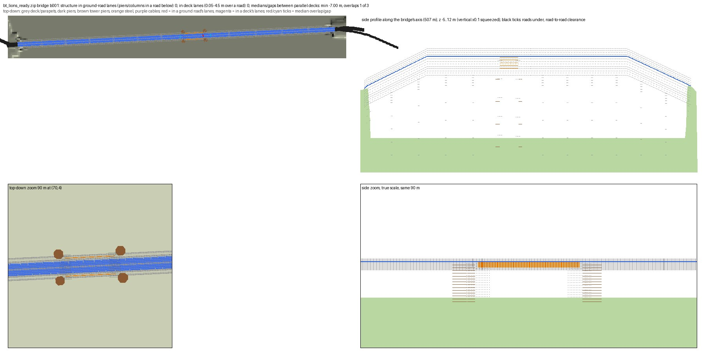
🌊 Clearance over the water, not over the island
A bridge over a river needs room for boats under it, so MapNG lifts the deck over the water by a clearance that depends on the river. The clearance was measured from the ground at every point along the crossing, so where a river had an island, the deck got its full clearance over the island too. The Pont de Bir-Hakeim in Paris crosses the Seine over the Île aux Cygnes, and came out with a 21 m peak in the middle.
The clearance is now measured from the water's surface, while the deck still keeps clear of the ground at every point. Bir-Hakeim is nearly level again.
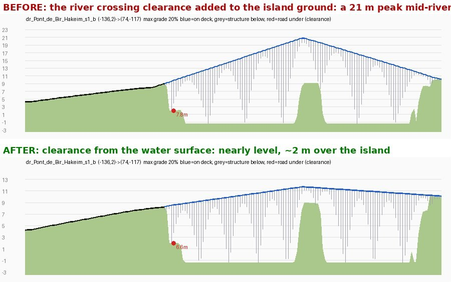
Arches under the deck
The same bridge showed a second problem in game: its arches came up through the road. A deck arch was a curve that met the deck only at the middle of its span, so with one end standing on the island and the other in the water under a sloping deck, its rib rose up to 1.4 m above the road. The arches now stay under the deck along their whole length.
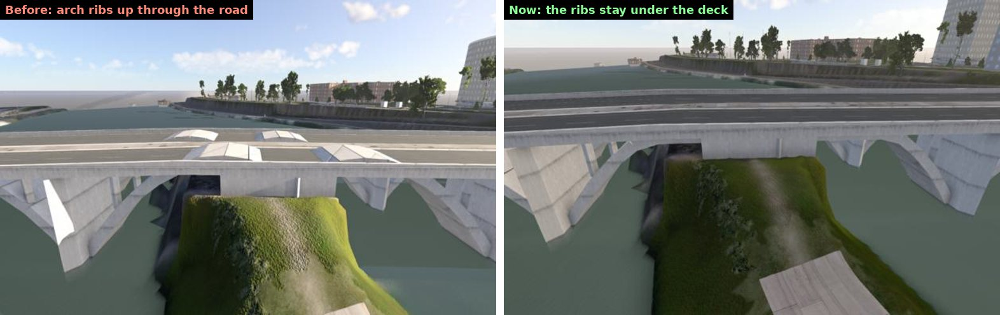
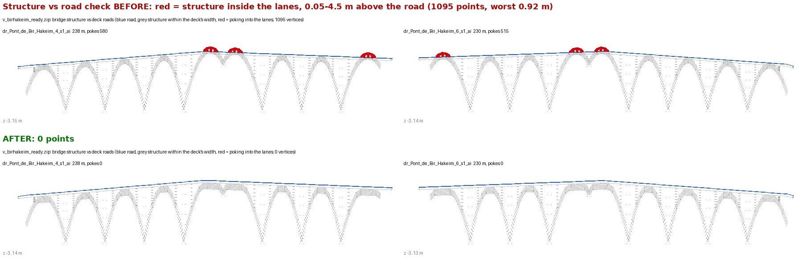
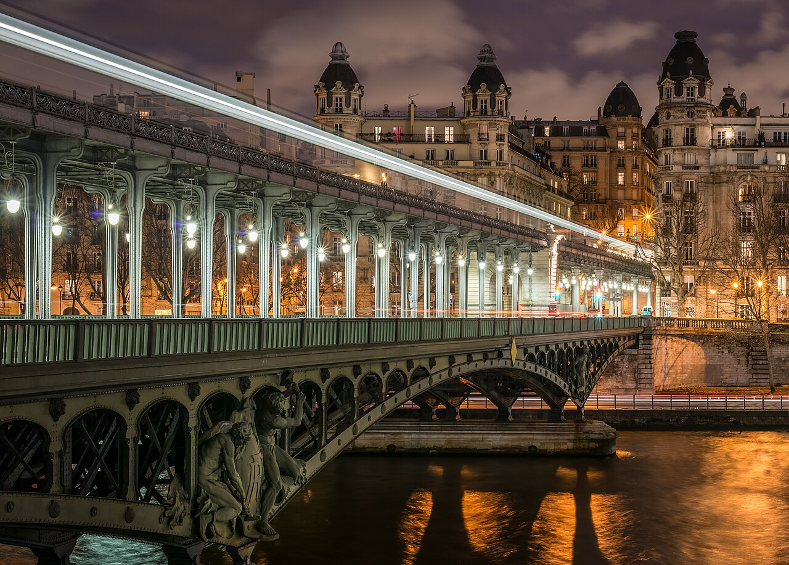

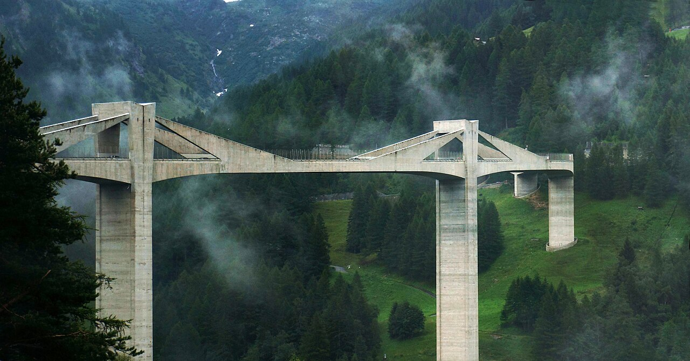
.jpg){kind=link}
Small streams
Around the Ganter Bridge in the Swiss Alps, the big viaduct was fine, but the small bridges on the mountain roads each had a hump: a stream or a ditch got the same clearance as a river, so a short bridge over a 1 m gully stood about 3.5 m above its road. Streams, drains and ditches now keep a bridge on the line between its banks. The sharpest grade changes at those bridge ends dropped from 29% to about 5%.
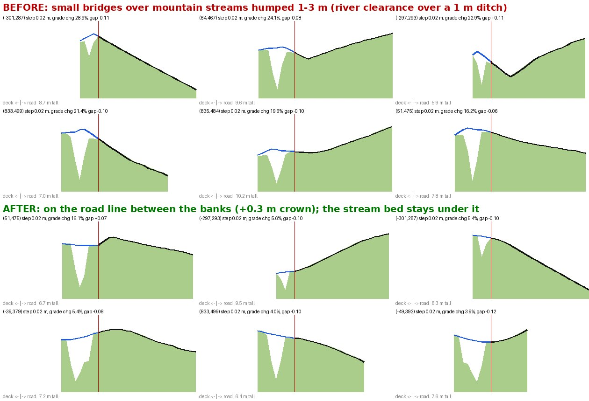
🛣️ Divided roads on one bridge
OpenStreetMap maps each direction of a divided road as its own line. On a bridge with a narrow median those lines are often closer together than the widths we draw, so the two carriageways overlapped. On the Golden Gate that put a median barrier and a row of hangers on the edge of a lane. Three general rules fix it:
- Side by side, not on top of each other. Where two one-way carriageways run alongside each other closer than their widths, both are narrowed to meet between them. Shoulders give way first, and lanes never go under 3 m.
- Cables at the outside. On a suspension or cable-stayed bridge carrying both carriageways, the cable planes stand at the outer edges of the whole deck, with nothing in the median.
- One surface. The two decks are tied to one height where they run side by side, so there's no step between them.
Measured on the deck: lanes and headroom hit by bridge structure went from 78,900 sample points to 155, none of them within the headroom over the road.
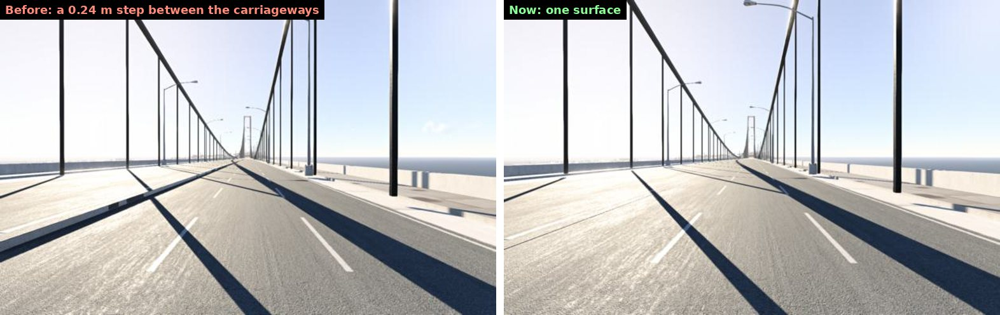
Road paint on level decks, and sidewalks round the towers
Two older bugs showed up here too. A perfectly level deck got no asphalt and no lane lines, because the game doesn't draw road decals on a completely flat object. Deck surfaces now get a thin hidden skirt, so every level deck has its road paint. And where a bridge's sidewalk swings out around a tower leg, past the edge of the deck, it used to drop to the water and climb back up. It now stays level.
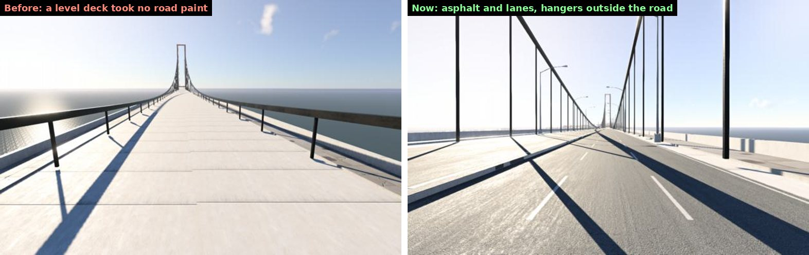
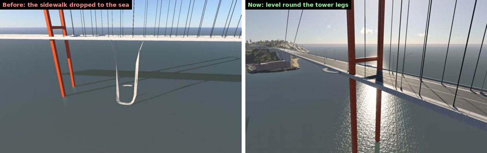
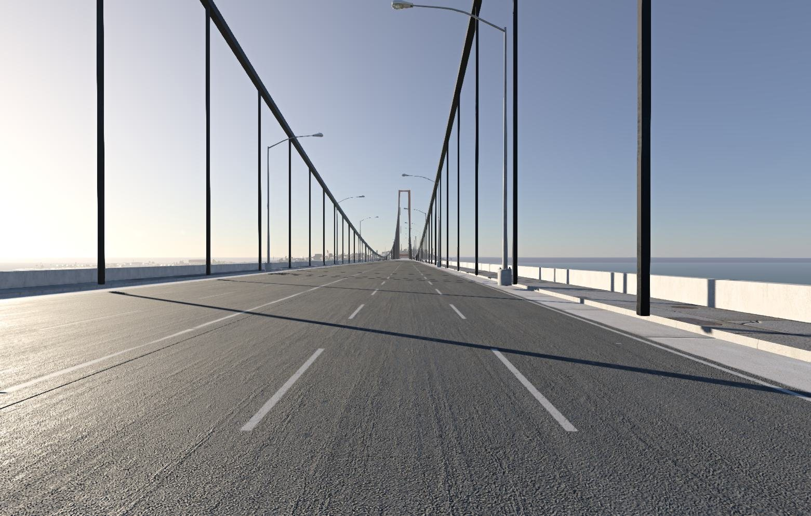
🏰 Drawbridges and the buildings on bridges
Some bridges carry buildings: a drawbridge's tower houses, a bridge tender's house, a toll booth. OpenStreetMap maps them as ordinary buildings, so MapNG built them as houses on the riverbed, with their roofs at the waterline under the deck. Now a small building inside a bridge's outline, or over the water against its deck, is part of the bridge. It stands at deck height on a pier of its own. A bridge's towers share one design, and where nothing is mapped they get a tower's proportions: two storeys and a pyramid roof. Anything that is mapped, like a height or a roof shape, still wins.
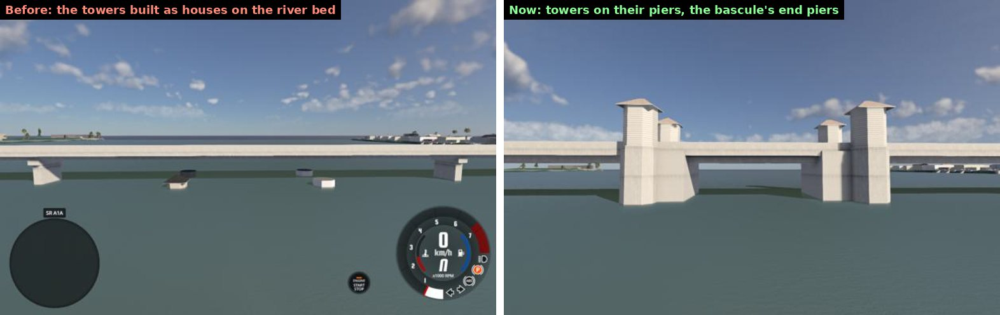
OpenStreetMap also says the middle span is a bascule (bridge:movable=bascule). Movable spans are now built as such: a bascule or lift span gets wide end piers out past the deck, which hold its counterweights in reality and its towers here, steel along its leaves, and no ordinary piers under them. A swing span gets its pivot pier.
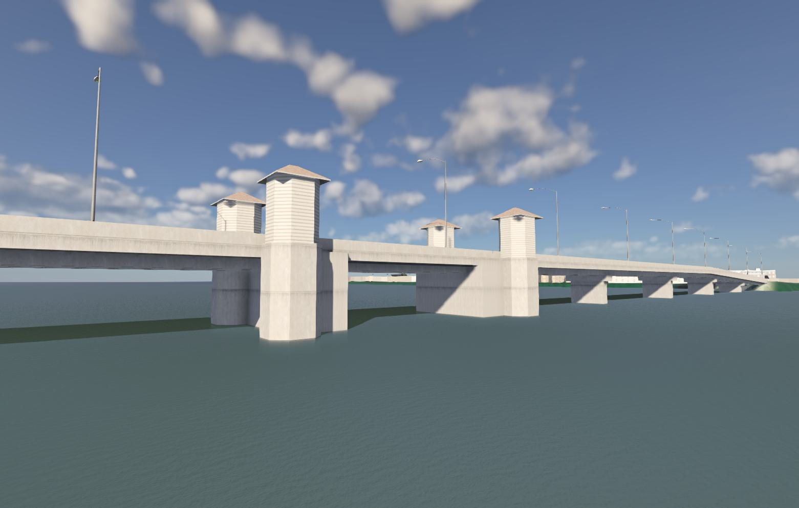
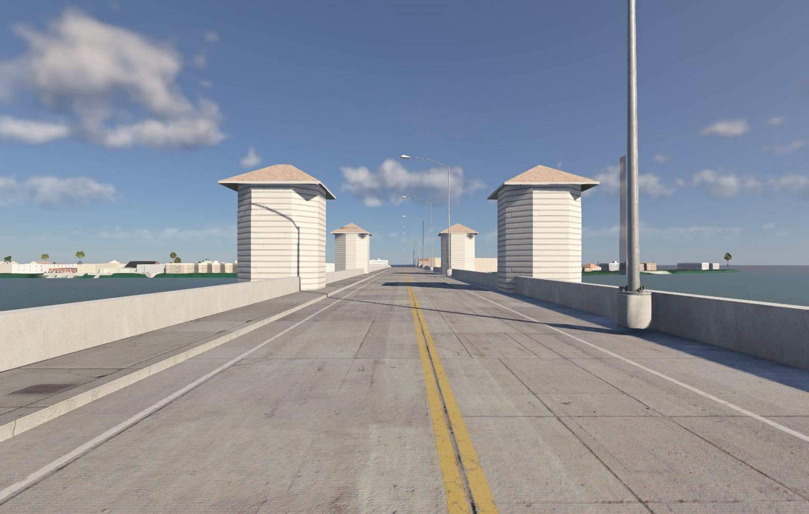
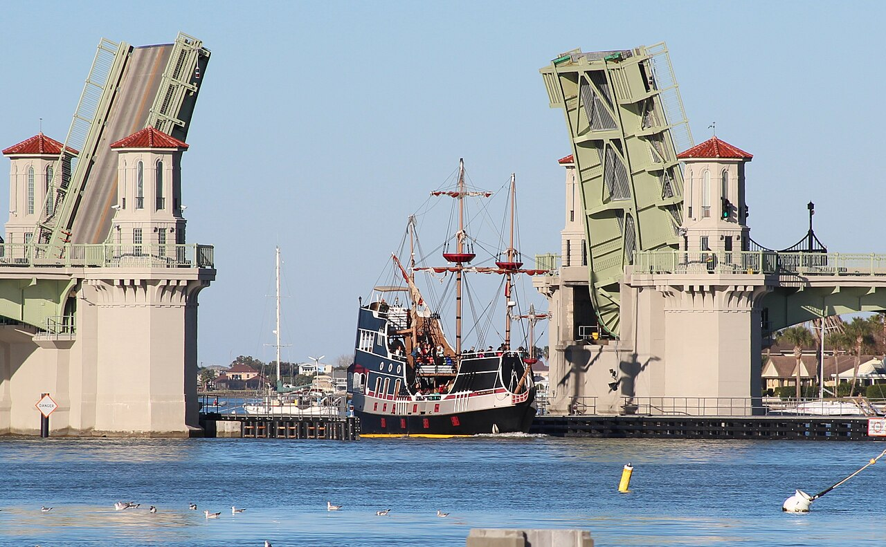
.jpg){kind=link}
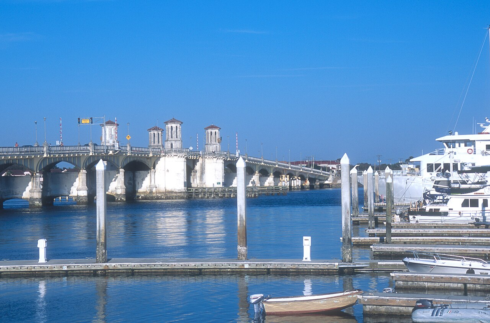

Lights on bridges
Street lamps were only placed along roads on the ground, so every bridge was dark at night. A lit bridge now gets lamps on its parapet at the deck's height, by the same rule as the street: tagged lit=yes, or a main road in town. A bridge over water never looks like "town" on its own, so it counts as town when it lands near urban streets.
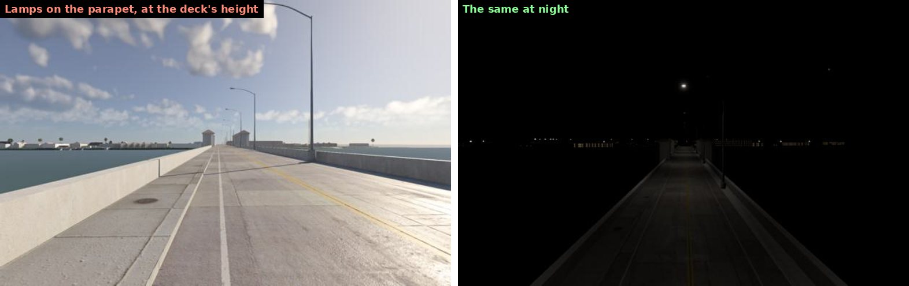
Still missing here: the obelisk posts and the real colours, cream walls and red roofs. OpenStreetMap doesn't have them for this bridge yet, and MapNG won't invent them.
🧹 Everything else in this round
| Bridge ends past a limit (Ready to drive, lidar) | Before | After |
|---|---|---|
| Brooklyn (Brooklyn Bridge, BQE) | 27 | 19 |
| Los Angeles four-level interchange | 28 | 18 |
| Atlanta "Spaghetti Junction" | 17 | 12 |
| Dallas High Five | 17 | 8 |
| Birmingham Gravelly Hill | 13 | 8 |
| Ganter Bridge area (worst grade change) | 29% | 5% |
A "limit" means a step over 10 cm, a grade turning more than 3% in 4 m, or a road more than 50 cm off its ground. These are strict on purpose, so the remaining count is what's left to work on.
🧭 What's good, and what's next
- Ready to drive is in good shape on lidar: decks clear what they cross, and the ends meet their roads smoothly almost everywhere. On the global 30 m data it's good on most bridges, with rougher spots where that data is noisy (dense cities).
- Untouched builds the bridges themselves correctly, but by design it doesn't reshape the ground, so on coarse 30 m data the approaches can still meet the terrain with a step.
- Still on the list: ramps lifted without a bridge tag that get a sharp crest; the noisy 30 m surface data around some cities; bridge decorations and colours where OpenStreetMap has them; and a wider look at national bridge data (like the US National Bridge Inventory) as an extra layer.
🙏 Thanks
Thanks to everyone testing bridges and sending reports in the Discord. Map data © OpenStreetMap contributors. Measured deck heights from USGS 3DEP lidar. Reference photos on this page are from Wikimedia Commons, credited under each one; we also compared our levels against street-level images from Mapillary contributors while testing.
Heads-up: the Windows build still isn't code-signed. If SmartScreen warns you, choose More info, then Run anyway.
Try a bridge you know and tell me what you see: an end that jolts, a pier in a road, a bridge that should be an arch. Post in the MapNG Discord or open a GitHub issue. 🧡